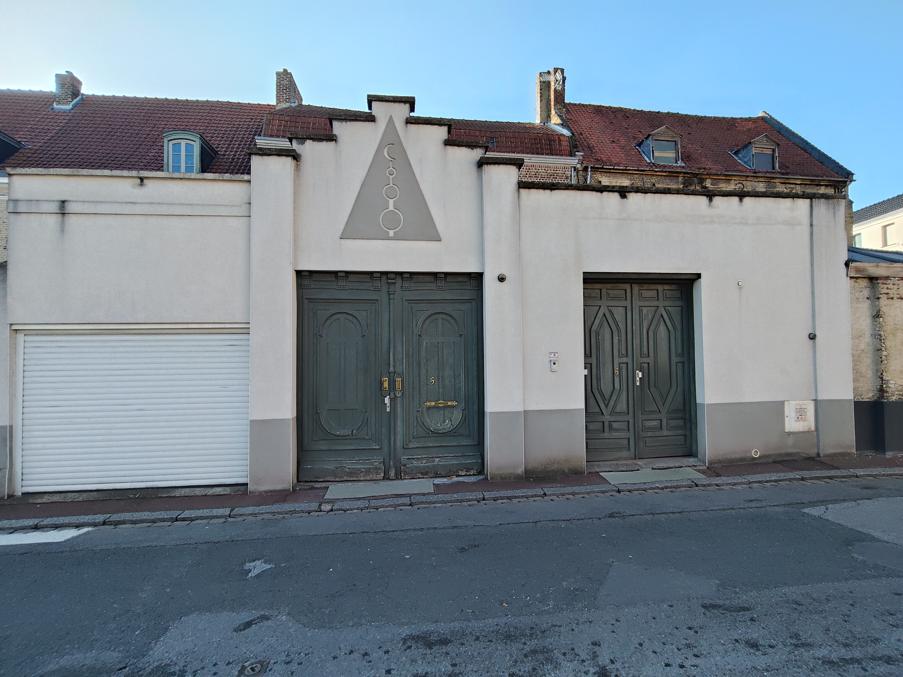
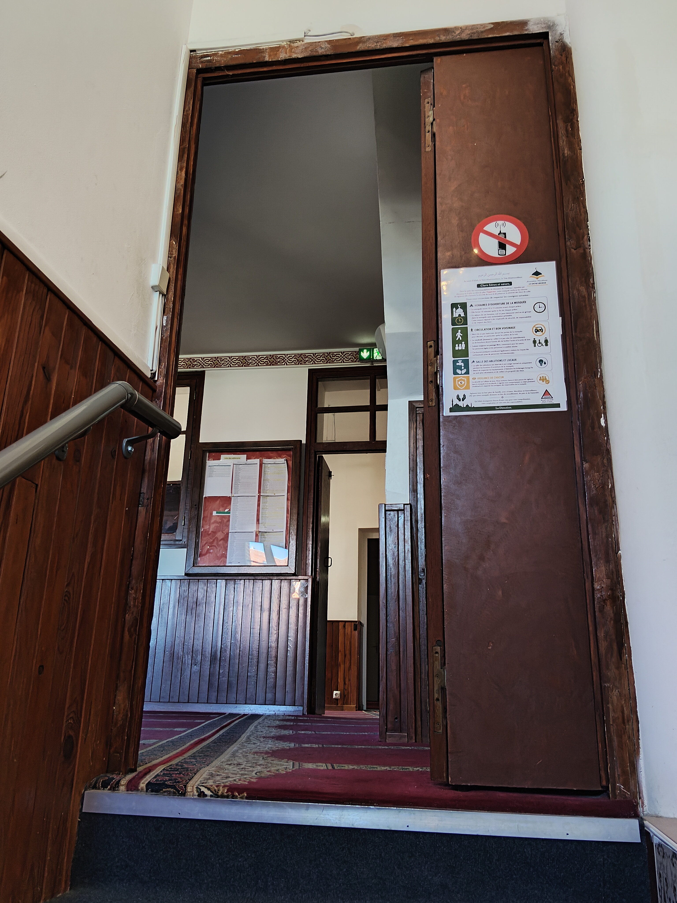
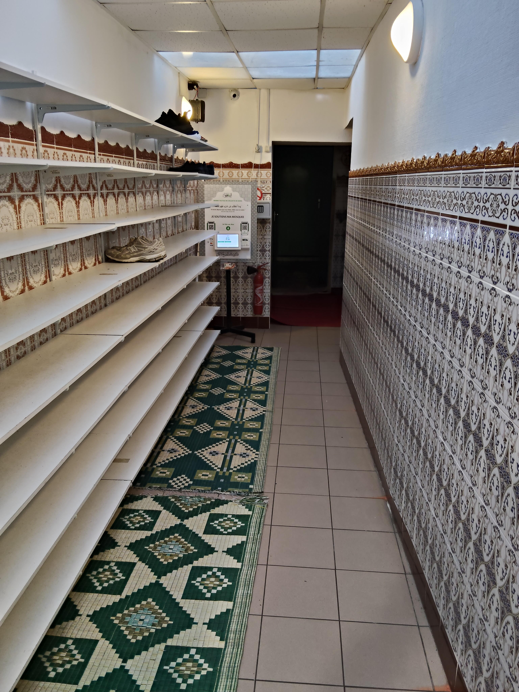
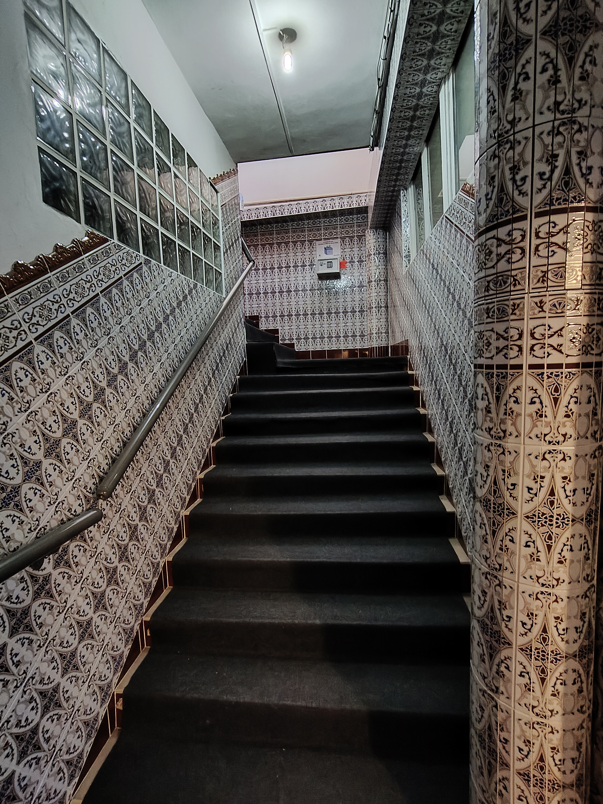
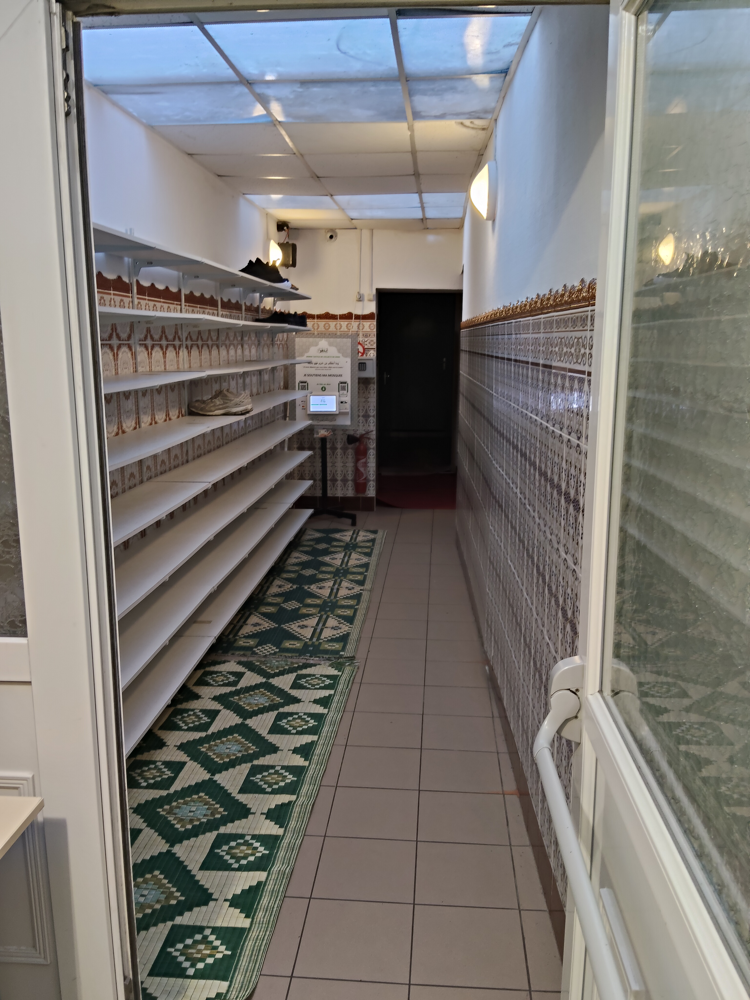
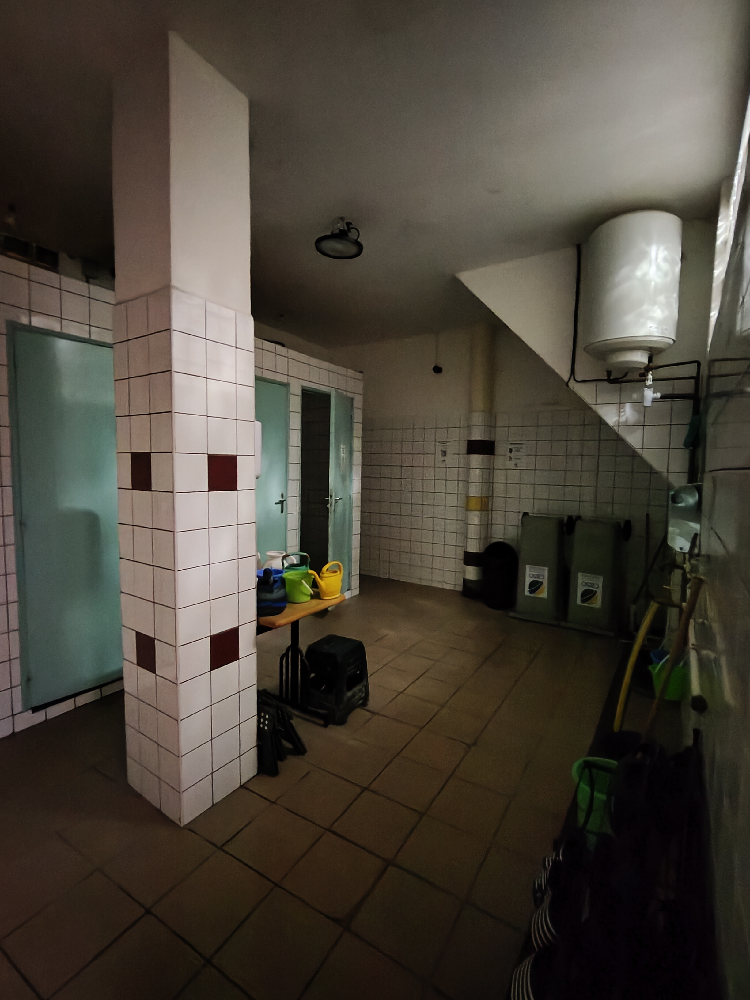

SAINT-OMER · LIEU DE RECUEILLEMENT
Un lieu de prière,
de paix et de partage.
Bienvenue à la mosquée de Saint-Omer. Retrouvez ici les informations pratiques et les horaires de prière.
Voir les horaires La mosquée de Saint-Omer
DÉCOUVRIR LA MOSQUÉE
SAINT-OMERRALENTI · 0,50×
DÉCOUVRIR LES LIEUX
Un espace pour se retrouver.
Quelques aperçus de la mosquée et de ses espaces.






Faites glisser pour découvrir
AUJOURD’HUI À LA MOSQUÉE
Les horaires
de prière.
Les horaires sont publiés par la mosquée sur Mawaqit et peuvent varier au fil de l’année. Consultez la source officielle ci-dessous.
Ouvrir MawaqitHORAIRES DE LA MOSQUÉE · MAWAQIT
VENIR À LA MOSQUÉE
Vous êtes les bienvenus.
5 rue de l’Abbaye, 62500 Saint-Omer